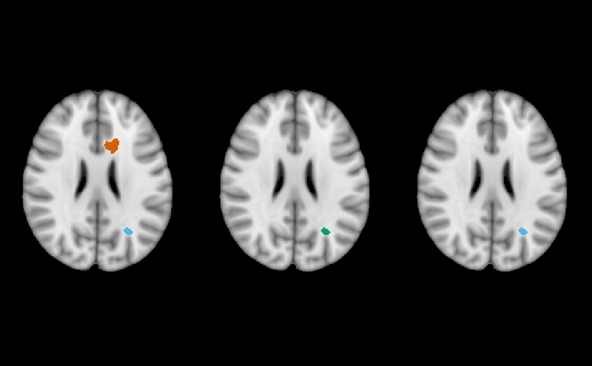
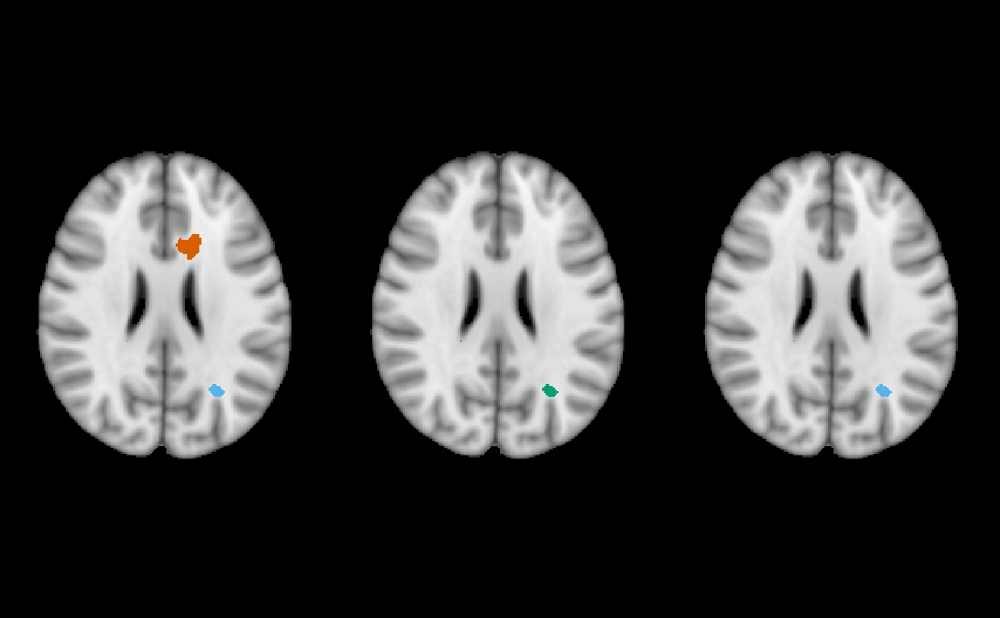

Uses ortho2 to plot differences between a predicted binary
image and the assumed ground truth (roi).
Arguments
- img
image to be underlaid
- pred
binary segmentation (prediction)
- roi
binary manual segmentation (ground truth)
- xyz
coordinate for the center of the crosshairs.
- cols
colors for false negatives/positives
- levels
labels for false negatives/positives
- addlegend
add legend, passed to
ortho2- center
run
xyzonroi. Disregarded ifxyzis notNULL- leg.cex
multiplier for legend size
- ...
arguments to be passed to
ortho2ormulti_overlay- x
List of images of class
niftior character vector of filenames- z
slice to display
See also
Examples
set.seed(5)
dims = rep(10, 3)
arr = array(rpois(prod(dims), lambda = 2), dim = dims)
nim = oro.nifti::nifti(arr)
roi = nim > 2
pred = nim > 1.5
ortho_diff(nim, pred, roi)
 set.seed(5)
dims = rep(10, 3)
arr = array(rnorm(prod(dims)), dim = dims)
nim = oro.nifti::nifti(arr)
mask = nim > 2
pred = nim > 1.5
multi_overlay_diff(nim, roi = mask, pred = pred)
set.seed(5)
dims = rep(10, 3)
arr = array(rnorm(prod(dims)), dim = dims)
nim = oro.nifti::nifti(arr)
mask = nim > 2
pred = nim > 1.5
multi_overlay_diff(nim, roi = mask, pred = pred)
 # \donttest{
if (requireNamespace("brainR", quietly = TRUE)) {
visits = 1:3
y = paste0("Visit_", visits, ".nii.gz")
y = system.file(y, package = "brainR")
y = lapply(y, readnii)
y = lapply(y, function(r){
pixdim(r) = c(0, rep(1, 3), rep(0, 4))
dropImageDimension(r)
})
x = system.file("MNI152_T1_1mm_brain.nii.gz",
package = "brainR")
x = readnii(x)
mask = x > 0
alpha = function(col, alpha = 1) {
cols = t(col2rgb(col, alpha = FALSE)/255)
rgb(cols, alpha = alpha)
}
roi = y[[2]]
pred = y
multi_overlay_diff(x, roi = roi, pred = pred)
multi_overlay_diff(x, roi = roi, pred = pred,
mask = mask,
main = paste0("\n", "Visit ", visits),
text = LETTERS[visits],
text.x = 0.9,
text.y = 0.1,
text.cex = 3)
}

# \donttest{
if (requireNamespace("brainR", quietly = TRUE)) {
visits = 1:3
y = paste0("Visit_", visits, ".nii.gz")
y = system.file(y, package = "brainR")
y = lapply(y, readnii)
y = lapply(y, function(r){
pixdim(r) = c(0, rep(1, 3), rep(0, 4))
dropImageDimension(r)
})
x = system.file("MNI152_T1_1mm_brain.nii.gz",
package = "brainR")
x = readnii(x)
mask = x > 0
alpha = function(col, alpha = 1) {
cols = t(col2rgb(col, alpha = FALSE)/255)
rgb(cols, alpha = alpha)
}
roi = y[[2]]
pred = y
multi_overlay_diff(x, roi = roi, pred = pred)
multi_overlay_diff(x, roi = roi, pred = pred,
mask = mask,
main = paste0("\n", "Visit ", visits),
text = LETTERS[visits],
text.x = 0.9,
text.y = 0.1,
text.cex = 3)
}

 # }
# }